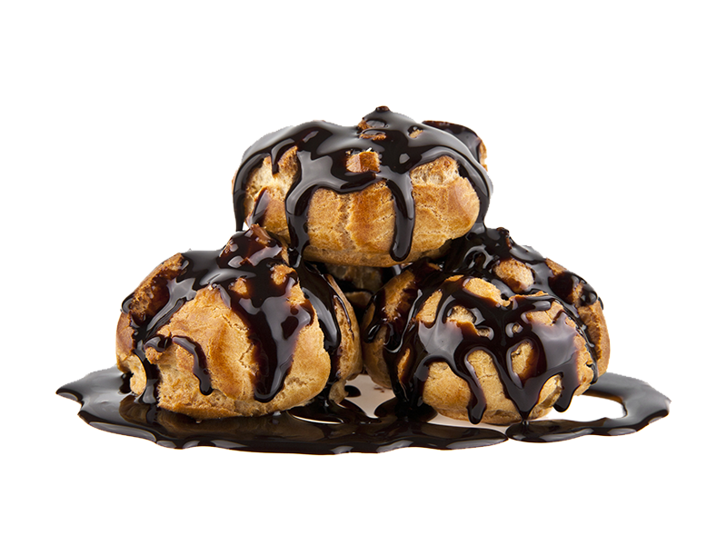

Kaç Kişilik:20
Hazırlama Süresi:30 Dakika
Pişirme Süresi:40 Dakika
Profiterol Tarifi İçin Malzemeler
Profiterol hamuru için:
- 1 su bardağı su (ılık)
- 1 su Bardağı un
- 125 gram tereyağı
- 3 adet büyük boy yumurta (oda sıcaklığında)
Kreması için:
- 500 mL süt
- 1,5 çay bardağı toz şeker
- 2 adet yumurta sarısı
- 1 paket vanilin (veya vanilya çubuğu)
-
Çikolata sosu için:
- 220 gram bitter çikolata
- 200 gram krema
